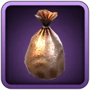

Item
Battle Hymn
Epic global item. All your units, summoned ones and your commander included: +150 maximum health.
All allied units gain +150 health.
That is the wording on the item's card. The sections below are worked out from the item itself and say what happens in play.
As an epic item (tier 4) it is offered on rounds 24 and 28. See Loot and items for how offers work.
What it does
Global item: it is never given to a unit and works from the moment you own it.
All your units, summoned ones and your commander included: +150 maximum health.
It is no longer offered as loot once you own one copy.
Who can carry it
No unit carries Battle Hymn. It goes to you the moment you pick it and works from then on, whichever units you field. It cannot be equipped on a unit and it does not take a slot in the item inventory.
Its bonus reaches every unit on your side of the fight, your commander and any unit summoned during the combat included.
You can own 1 copy at most.
Other tier 4 global items

Merchant's Compass Iron Discipline
Iron Discipline Scholar's Index
Scholar's IndexSee also
- Loot and items: loot rounds, offers, the inventory and equipping.
- Items: every item by tier and kind.
- Item table: every item's bonuses side by side.